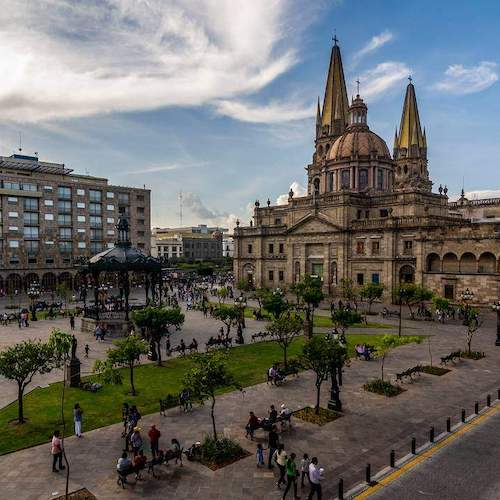

Home
Course Work
- CSE 110 Intro to Programming
- WDD 130 Web Fundamentals
- CSE 111 Programming with Functions
- CSE 210 Programming with Classes
- WDD 131 Dynamic Web Fundamentals
- WDD 231 Web Frontend Development I
Jalisco, Mexico
Jalisco, Mexico is my birthplace as well as the birthplace of Mariachi Music, Mexican hat dance, tequila, Mexican Rodeos, and the wide brimmed sombrero. Jalisco also manufactures 60% of the country's computers. It has a very vibrant culture and people. The state's most popular tourist location is called Puerto Vallarta.
Web and Computer Programming Certificate
CSE 110
WDD 130
CSE 111
CSE 210
WDD 131
WDD 231
Total Credits: 12